Screen 05 · Flow Into the Current — three buildable directions
Every picture below is a real game-engine frame from the same playable test level, with the same camera, the same Benny, the same coins and the same swipe controls. Only the scenery materials change between A, B and C. Nothing here is a concept painting.
412 × 915 phone frameswim speed 1.4 units/sbends at 4.5 and 8.5 units (about 3 s and 6 s in)same 7.6 s swipe plan for every clip
Start view
The moment the level begins, before Benny has moved.
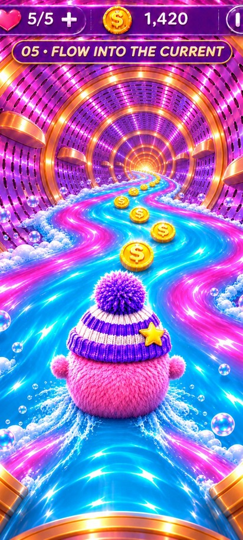
Approved your picture
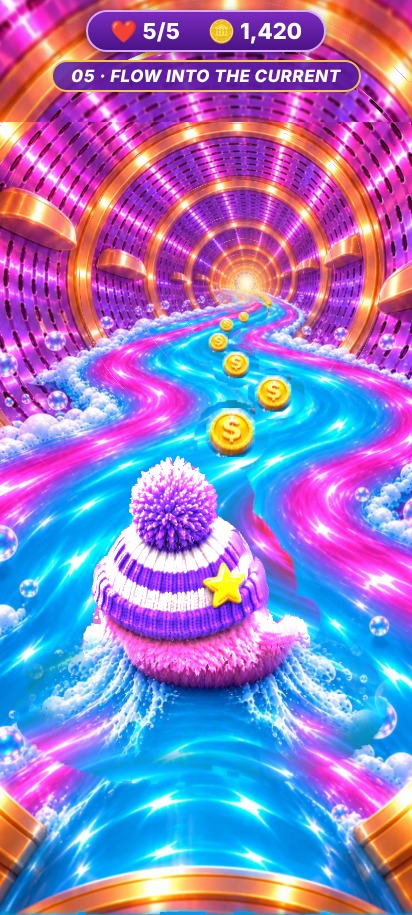
A Maximum fidelity
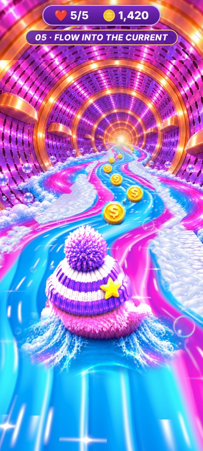
B Natural 3D water
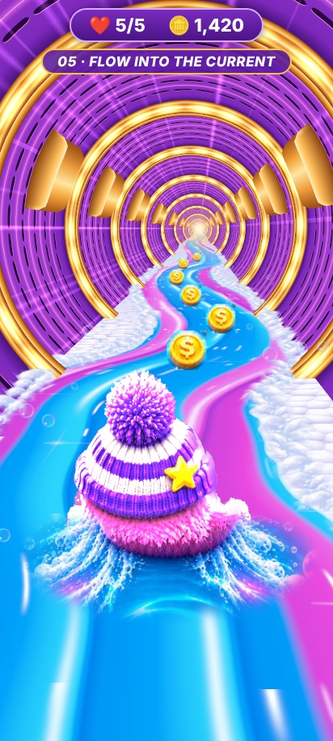
C Arcade, game-ready
Swimming through the first bend
Benny has swum 4.5 units (about 3 seconds) and is inside a right-hand bend. This is where the old methods fall apart.
Approved for reference
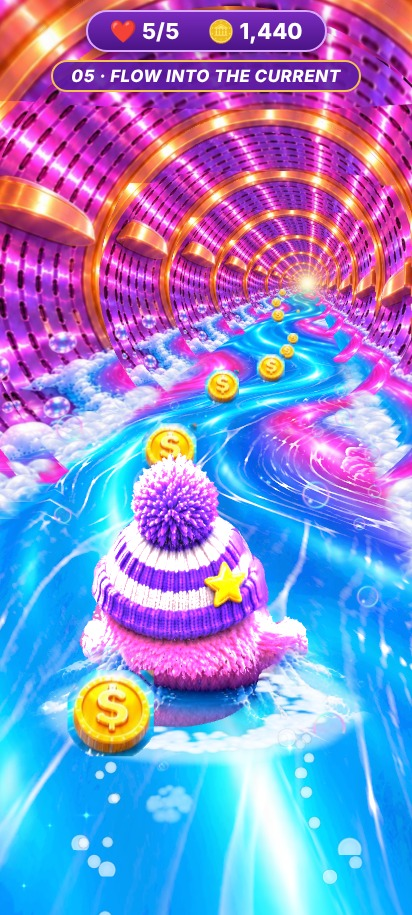
A at 4.5 units
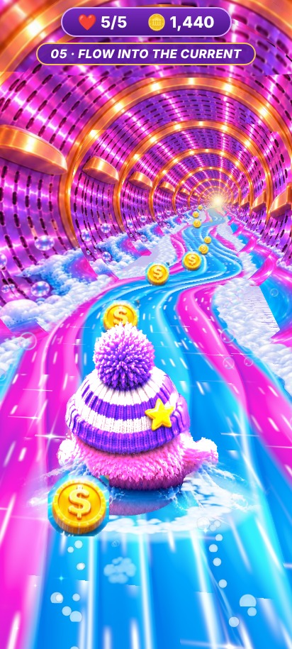
B at 4.5 units
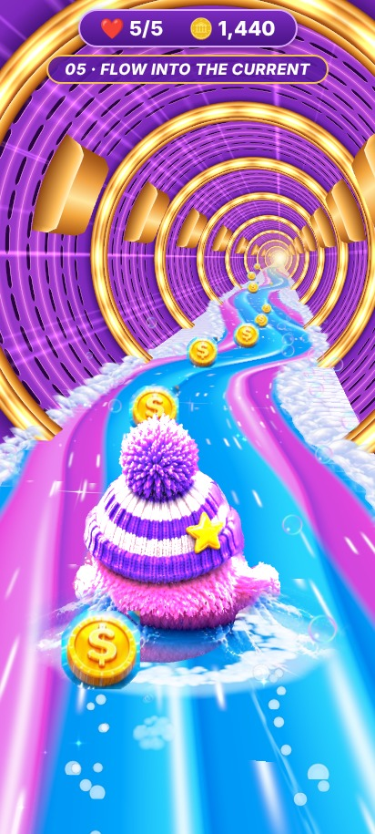
C at 4.5 units
Second bend, and a lane change
Top row: 8.5 units in (about 6 seconds), a left-hand bend. Bottom row: Benny after one swipe left, crossing the screen the way he does in your reference video.
Second bend, 8.5 units
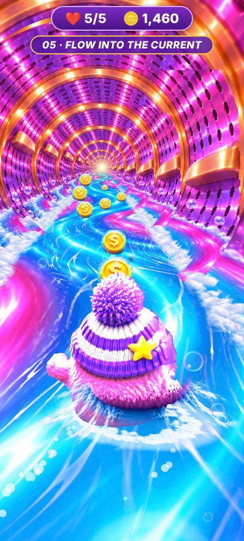
A at 8.5 units
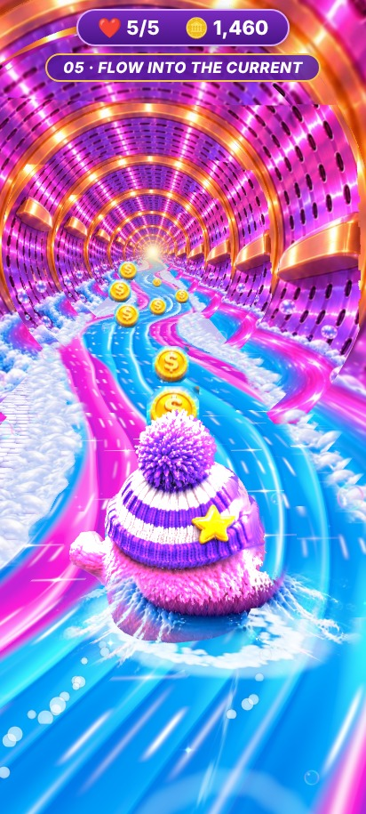
B at 8.5 units
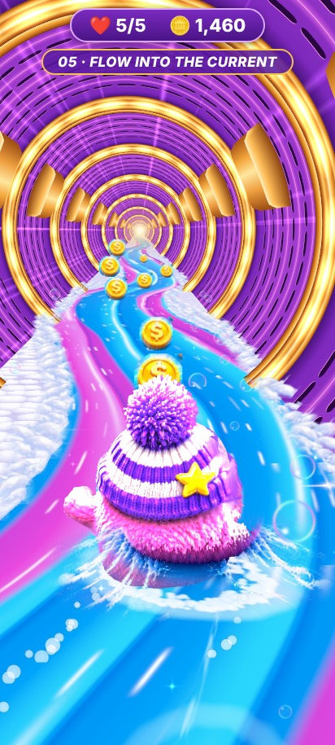
C at 8.5 units
Left lane, 4.5 units
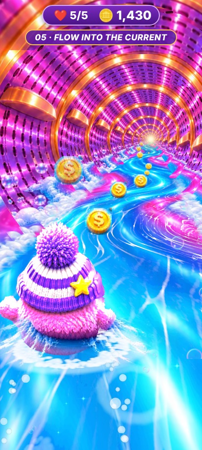
A left lane
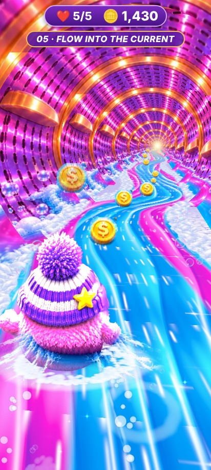
B left lane
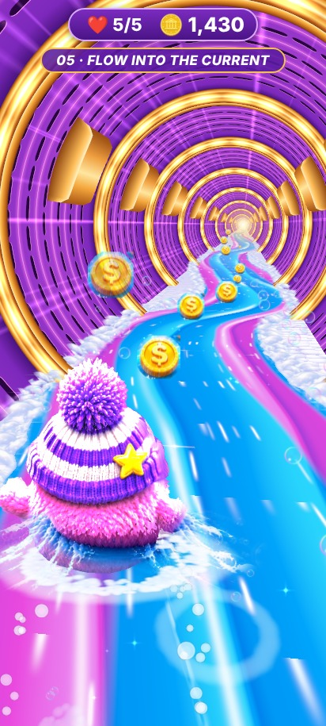
C left lane
Swimming clips
7.6 seconds each, recorded frame by frame in the engine with real touch swipes: left, left, right, leap, right, right, dive, left, leap, left. Identical for all three. In all three, every swipe was answered on the very next frame and Benny reached his new lane in 0.27 s.
Same swipes, same timing
A clipB clipC clip
What each option really gives you
A Maximum artwork fidelity
Your picture's own pixels on the 3D tunnel and on the river. This is the round-35/36 build with the reference-video movement switched on.
Likeness to your picture
The start view is your picture (measured in round 35: 80 % of scenery pixels within 20 levels). Once Benny swims, the water near him is your picture's far-away water blown up: by 4.5 units, 83 % of the water on screen is stretched more than four times (round-36 measurement). That is the smeared, streaky water you saw. It cannot be fixed with settings.
Water in motion
Moves, but as stretched painted streaks that tear and repeat at bends.
Swimming and steering
Yes, same controls, lanes, leap, dive, coins.
Reused
Everything. Nothing new.
Finishing the full screen
Quick, but it will not look better than today. This is the ceiling we have hit for five rounds.
Other screens
Same problem on every screen: right at the start, wrong once moving.
The tunnel, gold rings and paddles keep your picture's own pixels. Only the river is new: drawn live by the graphics card from your water design, so it is sharp at every distance.
Likeness to your picture
Same tunnel as A. The river uses the colours measured from your isolated water art (deep blue, azure, bright cyan; magenta and light pink), silky ribbons along the flow, magenta bands on both sides, white highlight dashes, four-point star sparkles and lavender-white foam domes along winding banks. Unavoidable differences: the water is your design redrawn, not your exact painted strokes; the pink bands sit where the rules put them, not exactly where you painted them; the gold frame at the bottom edge of your picture is not there; the foam is flatter than your painted puffs.
Water in motion
Streams toward the camera all the time, follows every bend, stays crisp right under Benny. No stretching, because nothing is being blown up.
Swimming and steering
Yes, identical to A and C.
Reused
The tunnel kit and its painted walls and rings, Benny and his paddling, swipe controls, coins, splashes, bubbles, camera, HUD, phone build. New: one water material (about 90 lines of shader code) and foam placed along the river's banks.
Finishing the full screen
Moderate. Tune the band layout and foam against your picture with you, run the whole 23-second level, check frame rate on a real Android phone.
Other screens
Yes. The same water material can take each screen's own colours (04, 06, 07, 08); each tunnel still needs its own work.
Everything redrawn clean by code: violet slotted walls, gold rings with ridges and lights, chunky 3D gold paddles, and a simpler version of B's river.
Likeness to your picture
Clearly the same world (purple slotted tunnel, gold rings, cyan and pink river, foam, coins, Benny), but plainer: no painted reflections on the walls, simpler paddles, fewer sparkles. The furthest of the three from your picture.
Water in motion
Clean and smooth, the calmest of the three.
Swimming and steering
Yes, identical.
Reused
Benny, controls, coins, camera, tunnel shape. Walls and rings are drawn when the game loads, so the big painted texture files could be dropped (smaller download).
Finishing the full screen
Easiest, and the lightest for phones.
Other screens
Easiest to repeat, but each screen moves further from its approved picture.
B is the only option where the water stays sharp, colourful and natural while Benny swims, steers and goes through bends, and the tunnel still shows your own artwork. A cannot get past the stretching; it is a limit of having one picture taken from one spot. C gives up too much of your look for a speed gain we have not yet shown we need.
Not done yet: nothing has been built beyond this short test. The full level waits for your choice.
Not measured: frame rate on a real Android phone. This test machine has no graphics card. Each playable link shows an fps meter in the corner, so you can check it on your phone.
Unchanged: your original artwork, the default game, and the round-35/36 versions.
Tell me A, B or C. You can also say what to change first in the one you pick.